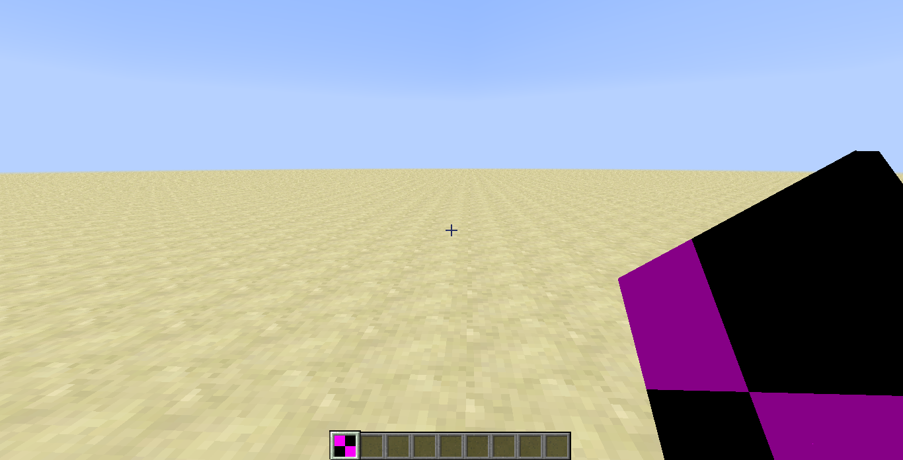
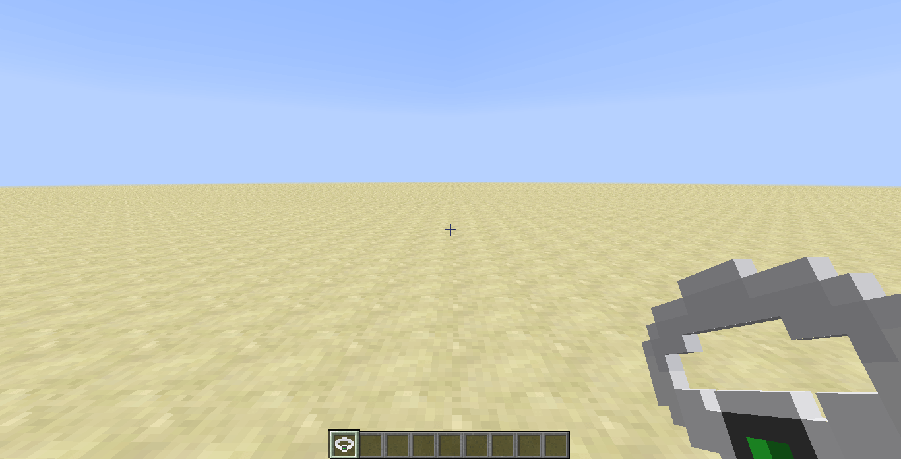
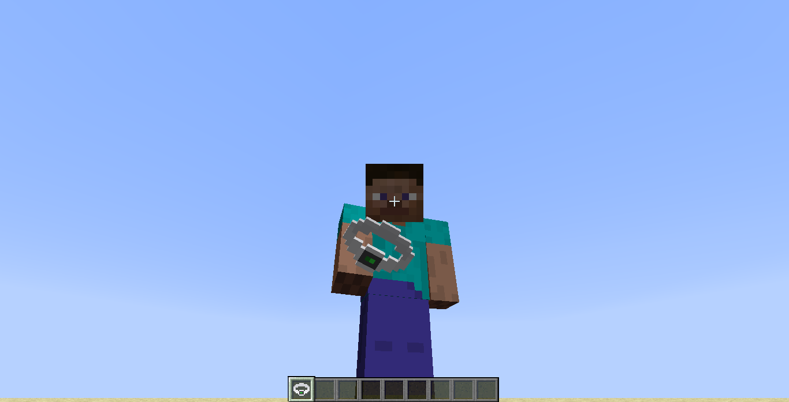
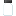
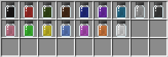
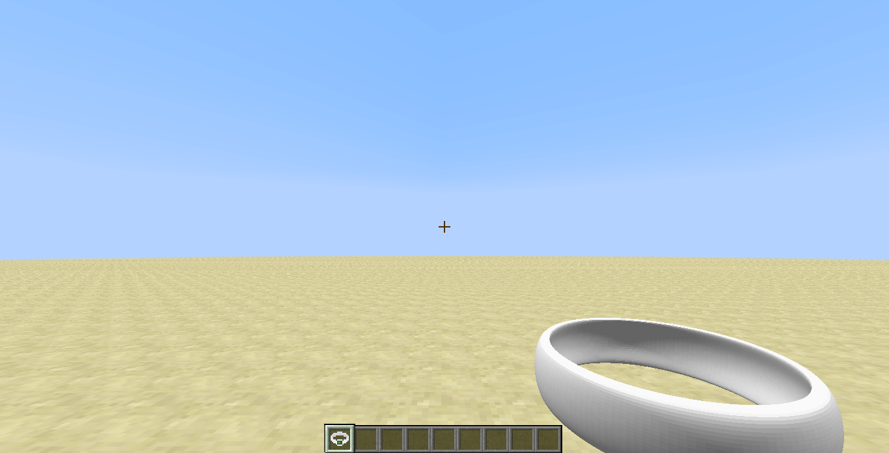

Создание предмета#
Основа#
Чтобы написать свой первый предмет, вам необходимо создать класс и наследоваться от Item.
package ru.mcmodding.tutorial.common.item;
import net.minecraft.item.Item;
public class RingItem extends Item {
public RingItem() {
setUnlocalizedName("ring");
setTextureName(McModding.MOD_ID + ":ring");
setMaxStackSize(1);
}
}
setUnlocalizedName(String)- задаёт нелокализованное название предмета(см. статью Локализация)setTextureName(String)- задаёт текстуру. Необходимо указывать ModId, чтобы текстура бралась не из ресурсов Minecraft, а именно нашего мода. Пример:modId:textureName, можно также указывать путь: 'modId:folder/textureName'setMaxStackSize(Integer)- задаёт максимальное количество предметов
Остальные сеттеры вы можете самостоятельно просмотреть в классе Item, ко многим из них прилагаются комментарии от MCP и MinecraftForge.
Теперь приступим к регистрации нашего предмета. Чтобы зарегистрировать наше кольцо, необходимо использовать GameRegistry#registerItem
в который передаётся экземпляр класса Item и регистрируемое имя предмета. Создадим для большего удобства класс ModItems
в котором будут храниться объекты наших предметов и будет происходить регистрация.
package ru.mcmodding.tutorial.common.handler;
import cpw.mods.fml.common.registry.GameRegistry;
import ru.mcmodding.tutorial.common.item.RingItem;
public class ModItems {
public static final RingItem RING = new RingItem();
public static void register() {
GameRegistry.registerItem(RING, "ring");
}
}
Осталось добавить вызов метода ModItems#register в CommonProxy#pre
public class CommonProxy {
public void pre(FMLPreInitializationEvent e) {
ModItems.register();
}
}
Запускаем игру и заходим в мир. Чтобы получить только что написанный предмет, введите такую команду:
/give @p mcmodding:ring.
Где mcmodding:ring:
mcmodding- это ModId модаring- регистрируемое имя предмета

Текстура#
В прошлой разделе мы рассмотрели базовый принцип создания предмета и указали текстуру с помощью метода Item#setTextureName,
но мы получили отсутствующую текстуру. Для того чтобы это исправить, необходимо поместить свою текстуру предмета в папку с ресурсами(resources) по пути
assets/modId/textures/items(вместо modId должен быть ваш идентификатор мода! В нашем случае это mcmodding).
Возьмём такую текстуру кольца:
Соотношение сторон должно быть 1:1, т.е если ваша текстура шириной 32 пикселя, то и высота должна быть 32 пикселя, иначе текстура не будет загружена! Исключением являются текстуры с KeyFrame анимацией.
Если всё было сделано, как написано в статье, то в результате наш предмет получит текстуру:  
Текстура с анимацией#
Вы можете добавить текстуру с KeyFrame анимацией, выглядят такие текстуры примерно так:

Для работы таких текстур необходимо создавать отдельный файл названиеТекстуры.png.mcmeta, который содержит такую информацию:
{
"animation": {
"frametime": 5,
"width": 12,
"height": 12,
"frames": [
0, 1, 2, 3, 2, 1, 0
]
}
}
frametime- длительность одного кадра в тиках. К примеру, если указать 40, то один кадр будет отображаться две секундыwidth- ширина кадра. Необходимо применять, если кадры имеют нестандартный ширинуheight- высота кадра. Необходимо применять, если кадры имеют нестандартную высотуframes- массив кадров. ПринимаетInteger, а также объектframe(см. ниже). Кадры начинаются от 0 и до N кадра(зависит от того сколько их в текстуре). Индексы можно менять местами, чтобы изменить порядок отображения кадров
Дополнение к frames#
{
"animation": {
"frames": [
{
"index": 0,
"time": 25
},
{
"index": 1,
"time": 10
},
{
"index": 2,
"time": 50
}
]
}
}
Вы можете также указать для конкретного кадра(по его индексу) время его воспроизведения.
Работает аналогично прошлому примеру, только достаточно менять параметр index для изменения порядка отображения.
Наложение текстур#
Данный раздел рассчитан на разработчиков, прочитавших статью "Подтипы"!
Возможно вы задумаетесь о том, как добавить не одну, а две и более текстур с наложением слоя или сменой от определённых условий, как например это сделано у кожаной брони или у лука при натягивании тетивы.
Создадим предмет Банка с краской, имеющий основную текстуру и текстуру слоя, которую в дальнейшем мы окрасим в стандартные цвета Minecraft.
package ru.mcmodding.tutorial.common.item;
import cpw.mods.fml.relauncher.Side;
import cpw.mods.fml.relauncher.SideOnly;
import net.minecraft.client.renderer.texture.IIconRegister;
import net.minecraft.creativetab.CreativeTabs;
import net.minecraft.item.Item;
import net.minecraft.item.ItemDye;
import net.minecraft.item.ItemStack;
import net.minecraft.util.IIcon;
import ru.mcmodding.tutorial.McModding;
import java.util.List;
public class PaintCanItem extends Item {
@SideOnly(Side.CLIENT)
private IIcon colorMask;
public PaintCanItem() {
setUnlocalizedName("paint_can");
setTextureName(McModding.MOD_ID + ":paint_can");
setMaxStackSize(1);
setHasSubtypes(true);
}
@Override
@SideOnly(Side.CLIENT)
public boolean requiresMultipleRenderPasses() {
return true;
}
@Override
@SideOnly(Side.CLIENT)
public IIcon getIconFromDamageForRenderPass(int meta, int renderPass) {
return pass == 1 ? colorMask : super.getIconFromDamageForRenderPass(meta, renderPass);
}
@Override
@SideOnly(Side.CLIENT)
public void registerIcons(IIconRegister register) {
super.registerIcons(register);
colorMask = register.registerIcon(McModding.MOD_ID + ":paint_can_color");
}
@Override
@SideOnly(Side.CLIENT)
public int getColorFromItemStack(ItemStack stack, int renderPass) {
return renderPass == 0 ? 16777215 : ItemDye.field_150922_c[stack.getItemDamage() % ItemDye.field_150922_c.length];
}
@Override
@SideOnly(Side.CLIENT)
public void getSubItems(Item item, CreativeTabs tab, List items) {
for (int meta = 0, size = ItemDye.field_150922_c.length; meta < size; meta++) {
items.add(new ItemStack(item, 1, meta));
}
}
}
requiresMultipleRenderPasses- требует от игры несколько проходов для отрисовки предмета(см. примечание ниже)
Minecraft для большинства предметов использует один проход, но при включении
requiresMultipleRenderPasses== true, кол-во проходов становится два. Чтобы изменить кол-во проходов для отрисовки предмета, вы можете посмотреть методItem#getRenderPasses(Integer)
getIconFromDamageForRenderPass(Integer, Iteger)- возвращает иконку предмета в зависимости от меты предмета и текущего прохода рендера.
Так как наш предмет имеет два прохода для отрисовки банки с краской, то нам необходимо указать, что во втором проходе нужно рисовать маску цвета банки. Почему мы начинаем не от 0, а от 1? Это связано с тем, что на 0 проходе находится основная текстура предмета, а уже от 1 до N(см.
Item#getRenderPasses(Integer)) дополнительные.
registerIcons(IIconRegister)- в данном методе проходит регистрация иконок предметовgetColorFromItemStack(ItemStack, Integer)- возвращает цвет предмета. Стандартный цвет предмета: 0xFFFFFF(16777215)
В
getColorFromItemStack(ItemStack, Integer)мы проверяем, если текущий проход равен 0, то цвет будет стандартный. Если же проход 1 до N(наша маска цвета), то окрашивать маску в цвет красителя по мете предмета.
Нам осталось добавить текстуры и зарегистрировать предмет. 
Если вы всё сделали правильно, то в игре вы получите такой результат: 
Модель#
Данный раздел рассчитан на более опытных разработчиков!
Текстуру вы научились добавлять к своему предмету, но вы скорее всего захотите добавить модель к своему предмету.
Для это необходимо реализовать интерфейс IItemRenderer.
package ru.mcmodding.tutorial.client.render.item;
import net.minecraft.item.ItemStack;
import net.minecraftforge.client.IItemRenderer;
public class RingItemRender implements IItemRenderer {
@Override
public boolean handleRenderType(ItemStack item, ItemRenderType type) {
return false;
}
@Override
public boolean shouldUseRenderHelper(ItemRenderType type, ItemStack item, ItemRendererHelper helper) {
return false;
}
@Override
public void renderItem(ItemRenderType type, ItemStack item, Object... data) {
}
}
-
handleRenderType(ItemStack, ItemRenderType)- обрабатывает текущий тип рендера, а именно: -
ItemRenderType#ENTITY- предмет лежит на земле или вставлен в рамку ItemRenderType#EQUIPPED- предмет находится в рукеItemRenderType#EQUIPPED_FIRST_PERSON- предмет находится в руке от первого лицаItemRenderType#INVENTORY- предмет находится в инвентаре-
ItemRenderType#FIRST_PERSON_MAP- предмет рисуется как карта в обеих руках -
shouldUseRenderHelper(ItemRenderType, ItemStack, ItemRendererHelper)- нужно ли использовать вспомогательные обработки рендера(см. пояснение)
Дополнение к shouldUseRenderHelper#
Если вернуть true, то к нашему рендеру предмету будет применена вспомогательная обработка:
1. ItemRendererHelper#ENTITY_ROTATION - предмет будучи на земле вращается на 360
2. ItemRendererHelper#ENTITY_BOBBING - предмет будет двигать при ходьбе вверх-вниз
3. ItemRendererHelper#EQUIPPED_BLOCK - предмет будет отрисовываться 3D моделью, либо 2D текстурой
4. ItemRendererHelper#BLOCK_3D - приравнивает предмет к блоку имеющий RenderBlocks#renderItemIn3d
5. ItemRendererHelper#INVENTORY_BLOCK - предмет будет отрисовываться 3D модель, либо 2D текстурой в инвентаре
renderItem(ItemRenderType, ItemStack, Object[])- в данном методе происходит сама отрисовка нашего предмета. Параметрdataпринимает особые данные, которые передаются в зависимости от типа отрисовки. Подробнее смотритеItemRenderTypeдля получения подобной информации о данных передаваемых на каждый тип!
Помимо реализации IItemRenderer, необходимо загрузить модель. Можно использовать любую модель, главное чтобы её загрузку
поддерживал MinecraftForge, иначе вам придётся реализовывать загрузку нужной вам модели самостоятельно! В данном случае
мы воспользуемся готовым решением и будет использовать Wavefront(.obj) формат с дополнительной обёрткой от Dahaka
Если вы будете использовать Wavefront как основной формат моделей, то не забудьте сделать триангуляцию модели, чтобы не получить исключение при загрузке!
package ru.mcmodding.tutorial.client.render.item;
import cpw.mods.fml.relauncher.Side;
import cpw.mods.fml.relauncher.SideOnly;
import net.minecraft.item.ItemStack;
import net.minecraft.util.ResourceLocation;
import net.minecraftforge.client.IItemRenderer;
import net.minecraftforge.client.model.AdvancedModelLoader;
import net.minecraftforge.client.model.IModelCustom;
import net.minecraftforge.client.model.obj.WavefrontObject;
import ru.mcmodding.tutorial.McModding;
import ru.mcmodding.tutorial.client.render.ModelWrapperDisplayList;
import static org.lwjgl.opengl.GL11.*;
@SideOnly(Side.CLIENT)
public class RingItemRender implements IItemRenderer {
private final ResourceLocation modelPath = new ResourceLocation(McModding.MOD_ID, "models/ring.obj");
private final IModelCustom ringModel = new ModelWrapperDisplayList((WavefrontObject) AdvancedModelLoader.loadModel(modelPath));
@Override
public boolean handleRenderType(ItemStack item, ItemRenderType type) {
return type == ItemRenderType.EQUIPPED_FIRST_PERSON;
}
@Override
public boolean shouldUseRenderHelper(ItemRenderType type, ItemStack item, ItemRendererHelper helper) {
return true;
}
@Override
public void renderItem(ItemRenderType type, ItemStack item, Object... data) {
glPushMatrix();
glDisable(GL_TEXTURE_2D);// Отключаем текстурирование, так как у нас её нет для данной модели
glTranslatef(2F, 0F, 0F);// Смещаем по X модель, чтобы было хорошо видно модель
ringModel.renderAll();
glEnable(GL_TEXTURE_2D);// Включаем текстурирование
glPopMatrix();
}
}
Если вы хотите использовать текстуру, то вам необходимо сделать перед отрисовкой привязку текстуры
Пример привязки текстуры к модели:
public class RingItemRender implements IItemRenderer {
private final ResourceLocation ringTexturePath = new ResourceLocation(McModding.MOD_ID, "textures/models/ring.png");
@Override
public void renderItem(ItemRenderType type, ItemStack item, Object... data) {
Minecraft.getMinecraft().renderEngine.bindTexture(ringTexturePath);
glPushMatrix();
glTranslatef(2F, 0F, 0F);
ringModel.renderAll();
glPopMatrix();
}
}
Остаётся загрузить модели по указанным нами путям в ресурсах нашего мода и запустить игру!
